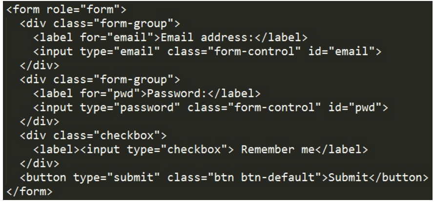
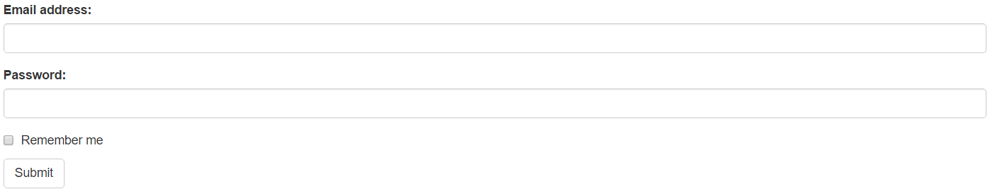
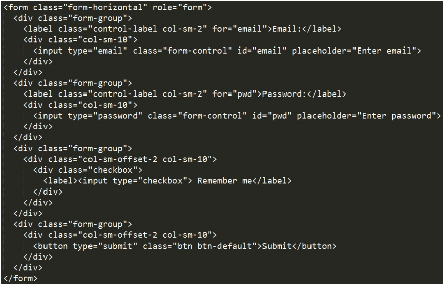
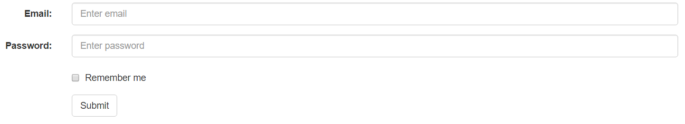
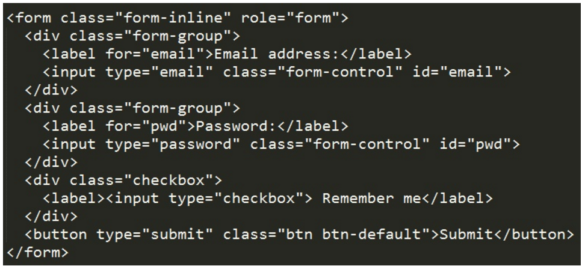
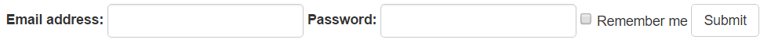

การใช้งาน Form ใน Bootstrap
Post by Tanatporn Ngamkasaemsup, Feb 1, 2017.
Form Bootsrap
รูปแบบการควบคุมโดยอัตโนมัติได้รับจัดแต่งทรงผมระดับโลกบางคนที่มี Bootstrap : ต้นฉบับเดิมทั้งหมด
<\input> ,
<\textarea> และ
<\select> องค์ประกอบที่มีระดับ .form-control มีความกว้าง 100%
Bootstrap ให้สามประเภทของการจัดรูปแบบ:
• รูปแบบแนวตั้ง (ค่าเริ่มต้น)
• รูปแบบแนวนอน
• รูปแบบอินไลน์ (บรรทัดเดียวกัน)
กฎระเบียบมาตรฐานสำหรับทั้งสามรูปแบบรูปแบบ:
- มักจะใช้
<\form role="form"> (ช่วยปรับปรุงการเข้าถึงสำหรับผู้ที่ใช้โปรแกรมอ่านหน้าจอ)
- ห่อป้ายชื่อและรูปแบบการควบคุมใน
<\div class="form-group"> (จำเป็นสำหรับระยะห่างที่เหมาะสม)
- เพิ่มระดับ .form-control เพื่อต้นฉบับเดิมทั้งหมด
<\input> ,
<\textarea> และ
<\select> องค์ประกอบ
BOOTSTRAP แนวตั้งแบบฟอร์ม (เริ่มต้น)
ตัวอย่าง

ผลลัพธ์ที่ได้

BOOTSTRAP แบบแนวนอน
รูปแบบแนวนอนยืนห่างจากรูปแบบอื่น ๆ ทั้งในจำนวนของมาร์กอัปและในการนำเสนอรูปแบบ กฎระเบียบเพิ่มเติมสำหรับรูปแบบแนวนอน : - เพิ่มระดับ .form-horizontal ไป
<\form> องค์ประกอบ - เพิ่มระดับ .control-label ทุก
<\label> องค์ประกอบ
ตัวอย่าง

ผลลัพธ์ที่ได้

BOOTSTRAP แบบอินไลน์(บรรทัดเดียวกัน)
ในรูปแบบอินไลน์ทั้งหมดขององค์ประกอบที่เป็นแบบอินไลน์ซ้ายชิดและป้ายชื่อที่มีข้าง
ตัวอย่าง

ผลลัพธ์ที่ได้

Leave a Comment: